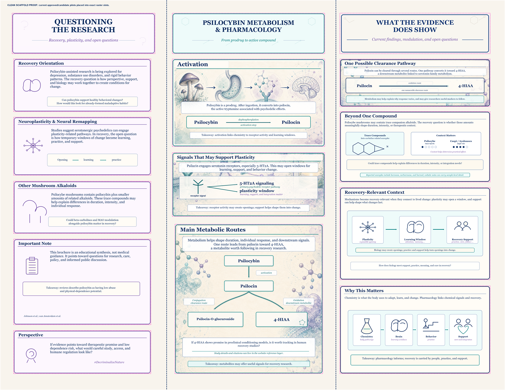
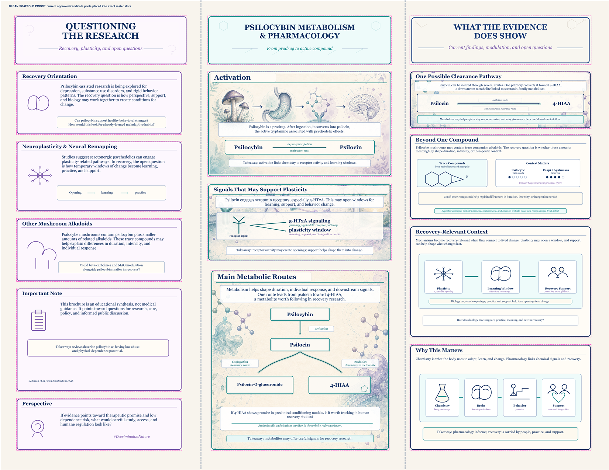
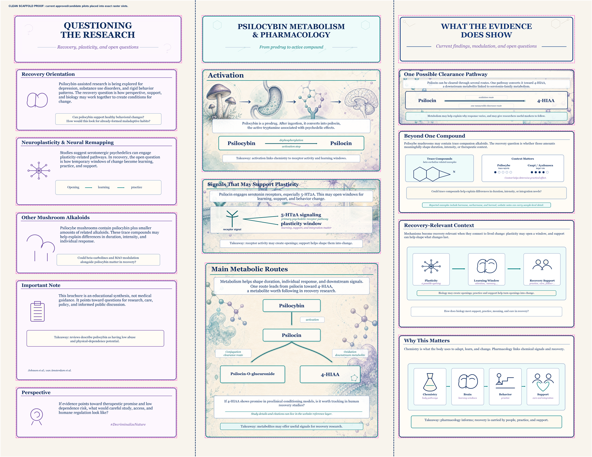
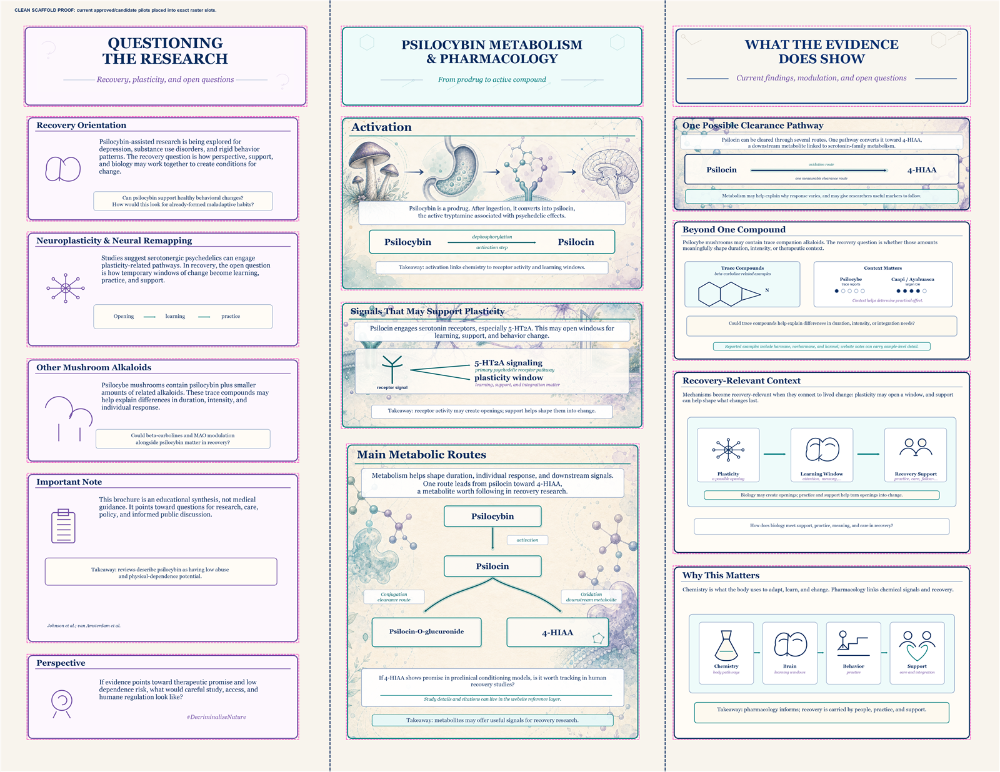
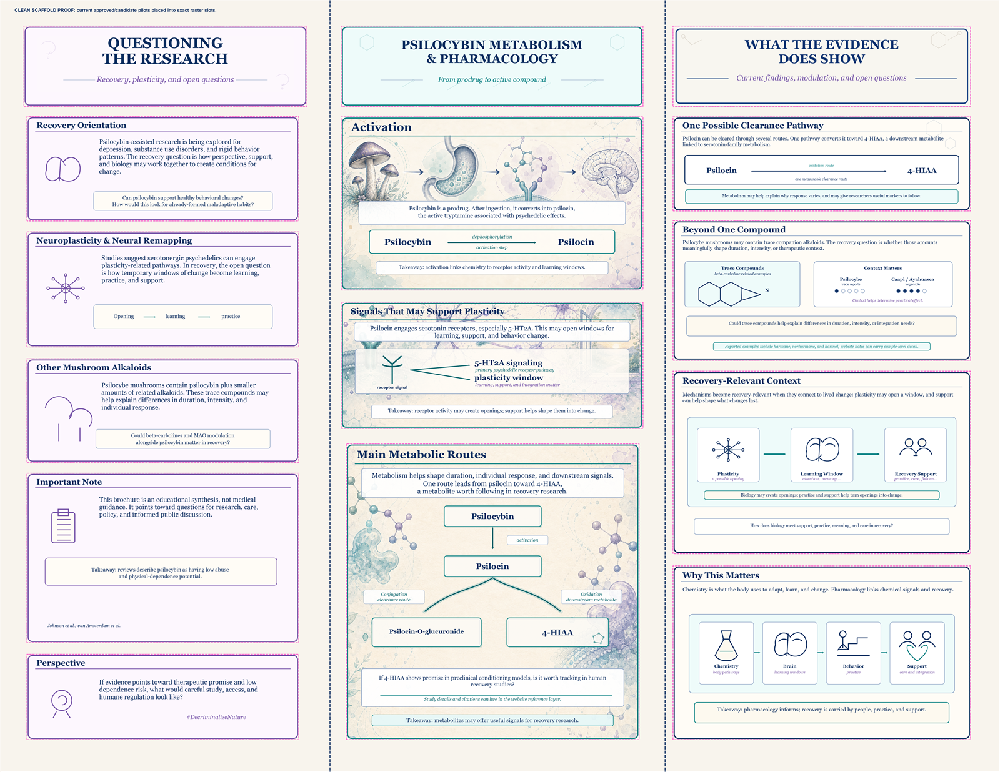

Previous Versions
Archived snapshots for comparing older brochure review states.
activation-border-v11
Applies the AI Border Rule to Activation: crop source border, clip art to the official rounded panel, draw code border last.
activation-border-v8
Crops out the generated Activation source border so the official code-drawn border owns the panel edge.

header-band-consistency-v1
Applies the quiet header-band rule to Activation and Main Metabolic Routes for consistency across AI-hybrid panels.

signals-title-band-v1
Adds a quiet title band to Signals That May Support Plasticity so the header no longer competes with the art.
right-clearance-ai-v4
Adds a quiet title band to keep One Possible Clearance Pathway readable over the art while preserving edge bleed.

right-clearance-ai-v2
Softens clearance route subheader colors into calm label capsules to reduce art/text clash.
right-clearance-ai-v1
Adds the right-column One Possible Clearance Pathway AI-hybrid pass.

center-ai-hybrid-routes-v2
Fixes the central activation arrow in Main Metabolic Routes so all route arrows share the same illustrated style.
center-ai-hybrid-routes-v1
Center-column AI-hybrid pass with accentuated metabolic route arrows.
